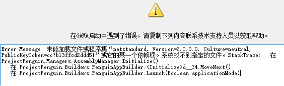

常见问题及解答
Q：如何申请试用GAMA？如何购买GAMA？
A：请咨询当地的yjk销售，或用当地电话拨打 010-86489797咨询
Q：gama里参数化建的模型/gama读取yjk模型后对模型进行了一些修改，如何看到修改？
A：yjk中切换到数智设计模块，在gama中右键想要预览的模型卡片，选择预览方式。
Q：我下载的版本是否为最新版本GAMA
A：当前版本可在 盈建科软件 - 盈建科软件 (yjk.cn)可以在这里下载最新版本yjk5.2,里面包含了最新版本GAMA2.4
Q：我找到的案例中一些卡片报错或显示为未知卡片，如何消除报错？
A：1.首先确认yjk与gama版本是否更新为最新 2.在最新版gama中重新拉出原本报错的卡片并连接
Q：卡片包保存为pgu后缀文件，怎么打开？
A： 直接将文件拖进已经打开的gama画布中。
Q：安装后启动报错,标志性文字:Error Message:netstandard, Version=2.0.0.0；

A：安装QQ群中net framework 4.7.2或4.8版本，若提示安装失败or系统不支持，则需更新系统；
Q： 提示“未能成功写入启动所需配置文件.Ox80CECE09”
A：用管理员启动gama。这个错误的原因是 gama启动前需要写入一个yjks.exe.config文件在安装路径下。
Q：无法完成在线更新：
A：①任务管理器结束下面的进程：
new_multi_server.exe PgwDistributedOptimizationManager.exe
②直接在官网下载完整更新包进行安装；